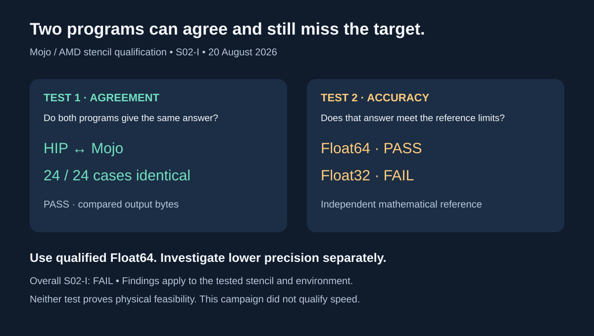

Capacity
Software qualification
What evidence is needed before a promising tool is ready for the next stage?
My example
We rewrote part of our scientific computing tools in Mojo and checked the new version against the established one. Across 24 test cases the two programs gave exactly the same answers. That was only the first test.
We then compared the answers with independent mathematical references. The higher-precision version passed. The lower-precision version failed.
Two programs can agree perfectly and still miss the target. Agreement and accuracy are different questions.

Scope: S02-I, 20 August 2026. Overall protocol: failed. Applies to the tested stencil and environment. No new GPU run, speed qualification, or physical-feasibility finding.
Sources: Pinned qualification report
A practical next step
Use a small qualification case with fixed criteria. Keep agreement, numerical accuracy, and performance as separate claims.
Progress would mean: A reviewer can identify the tested scope, failed criteria, and evidence needed for the next decision.
Who needs to be involved
Domain researchers, numerical specialists, software engineers, and prospective users.
Research stage: Translation → Validation.
More context
Think of two calculators showing the same answer. That is encouraging: they are consistent. But if both round away a small number that matters, both give the same wrong answer. Agreement is a useful check. Accuracy needs an independent reference.
| Check | Result | Plain meaning |
|---|---|---|
| Same input bytes read by both programs | Pass, 24 of 24 | Both started from the same data |
| Same output bytes | Pass, 24 of 24 | No disagreement between HIP and Mojo |
| Float64 against independent reference | Pass | Higher precision met the pre-set limits |
| Float32 against independent reference | Fail | Lower precision exceeded the limits |
| Overall protocol | Fail | The full requirement set was not met |
| Speed | Not qualified here | No performance qualification is established by these results |
- Modernization should fix a shown limitation in correctness, maintainability, portability, security, or performance. Language choice alone proves nothing.
- The accuracy limits were set before the run, so any later change to those limits requires a new protocol version.
- The failed result is kept and published. It records which tested criteria passed and which need further work.
Agenda connection: Resource Guide, p. 5. Suggested breakout: Track A · Barriers to translation. Track placement and proposals are my contributions; the handouts provide the discussion context.